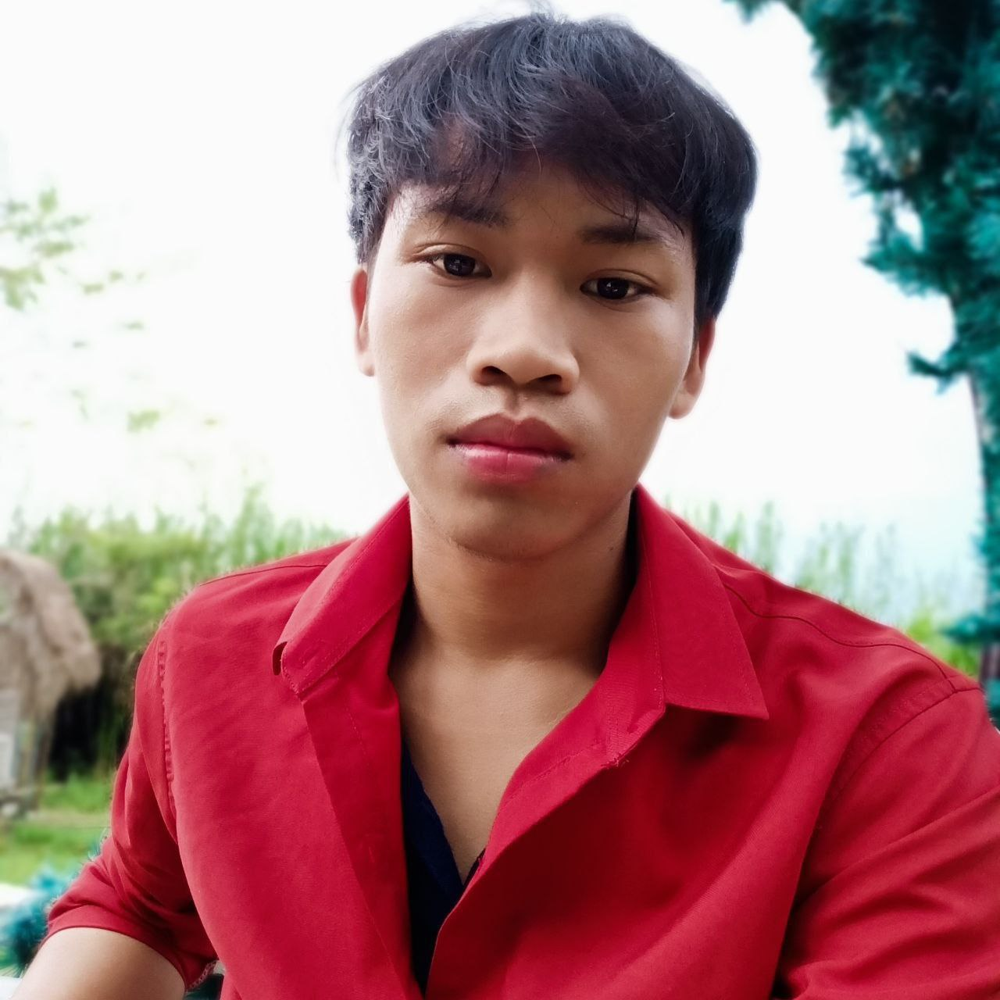

VISAL SAO

About me
I am a 22-year-old, fourth-year bachelor's student of industrial and mechanical engineering at ITC. I am
passinate in robotic and how to code like creating beautiful website.
Education
Experience
- July-2024: Summer internship at DGIST at South Korea
- Research in Motion and Control lab in Robotic department about concept Reinforcement learning for controlling robot.
- August-2023 to June 2024: A member of Robocon 2024
- Design mechanical concept of the robot
- Make in real world
- Test and modify
- February- June 2024: CNC milling machine project
- Make a 800x600mm CNC milling in a team of 14 students with mach3 controller.
- September-2023 to July-2024 : A student's president at Enfants du mekong(None government organization for sopporting university student in Cambodia)
- President of student: Lead to take any activities related to library, preparing event, sport...
Skills
- English: Advance
- French: Beginner
- Code: Python,Robot operating system, machine learning, web development
- Word, Excel, Powerpoint
- Design: Solid work
Other information